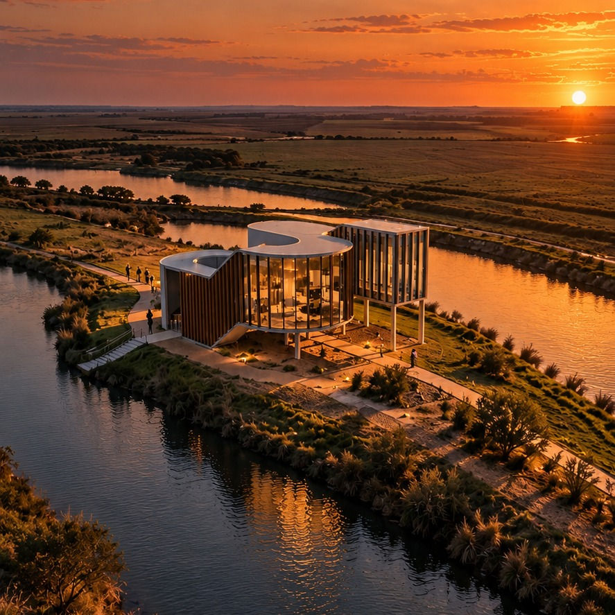

UN LUGAR PARA VOLVER A MIRAR
MEMORIAL RIO
CHOCANCHARAVA
Entrelazar el paisaje.
Habitar la memoria del agua.
El rio une.
La arquitectura
lo hace visible.
Un memorial que nace del encuentro entre dos orillas y una isla.
El proyecto propone entrelazar los limites del rio Chocancharava a traves de un espacio habitable. El recorrido vincula agua, tierra y memoria: acercarse, detenerse y reconocer el paisaje del que formamos parte.
La isla central distribuye recorridos que evocan las etapas del rio. La forma se pliega alrededor de un vacio: un patio inundable donde las variaciones del agua pasan a formar parte de la experiencia.
Benjamin Calosso
Ambiente 1 · FAUD · UM
Un nucleo comun reune las orillas. La tension de los hilos anticipa los recorridos.
La forma rodea el vacio y transforma el gesto inicial en una experiencia habitable.
El rio,
a la inversa.
El recorrido invierte las alturas del rio: el nacimiento se representa abajo. El inicio aproxima el cuerpo al suelo, al agua y a la memoria del origen.
Ascender permite sentir las etapas y el crecimiento del rio. El patio inundable incorpora sus cambios al recorrido.
La luz cambia.
La memoria permanece.
Tres momentos para imaginar la experiencia del memorial.
El agua despierta
antes que la ciudad.
Entre dos orillas,
un lugar para permanecer.
Cuando el paisaje se apaga,
el recuerdo sigue encendido.
Amanecer y hora azul son variaciones visuales generadas a partir del render de referencia; no son renders extraidos del modelo 3D.
Explorar la forma.
Gira, acercate y recorre la geometria original del memorial. La forma, los niveles y el vacio se leen desde cada angulo.
Cargando el memorial…